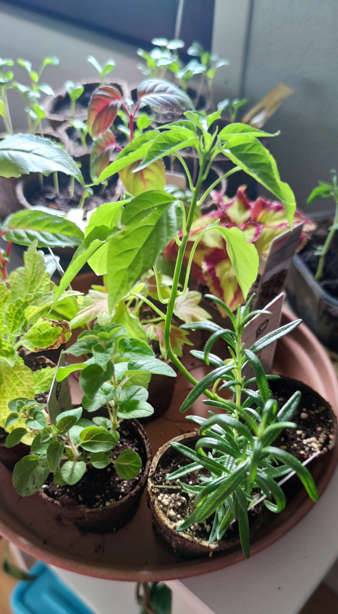

Istutetut kasvit tarvisevat säistä ja kasvista riippuen enemmän tai vähemmän hoitoa pitkin kesää ja kasvukautta. Istutus vaiheessa ota huomioon kasvin tilan tarve. Alkukesän taimet ovat vielä pienikokoisia joten ne kasvavat vielä paljon kesän aikana. Liian tiivisti istutetut kasvit joutuvat taistelmaan valosta ja tilasta, jolloin väkisinkin toinen kärsii. Kastele taimi hieman ennen istutusta. Kun kasvin juuristo on kostea se on valmiina uuteen multaan istuttaessa levittäytymään ja juurtumaan. Lisäksi juuristo ei katkeile niin herkästi siirrettäessä.
Irrota taimi mahdollisesta esikasvatus ruukustaan. Jos taimella on jo tiivisjuuristo, joka on pakkautunut ruukun pohjalle, voit hieman kädellä irroitella juuria toisistaan. Hyvinvoiva taimi kestää vaikka juuret hieman katkeilisivat. Aseta taimi kaivamaasi kuoppaan. Peitä juuristo mullalla. Suurimman osan kasveista voi istuttaa hieman syvemmälle kuin mitä ne ovat edellisessä ruukussa olleet. Tämä vahvistaa kasvin vartta. Kasvin alalehdet ovat hyvä yläraja istutus syvyydelle.